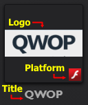
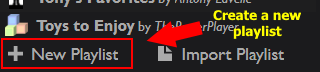
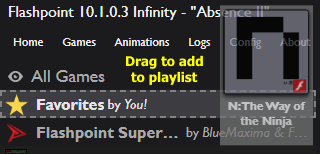
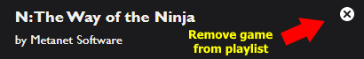
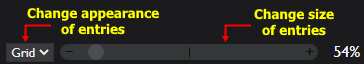

Introduction to the launcher
The Flashpoint launcher is the program through which archived games and animations can be played. It also offers numerous ways to customize its appearance and organize entries, all of which will be covered in this section.
Browsing the archive

Upon starting Flashpoint, you will be greeted with the Home screen. It contains quick links to several areas of the launcher, as well as a random selection of entries.
There are plenty of ways to begin browsing Flashpoint's collection from here:
- To view the full collection of games in Flashpoint, click the Games button at the top of the launcher. To view the full collection of animations in Flashpoint, click the Animations button next to it.
- To search for games in the archive, type your query into the search box at the top of the launcher and press Enter. If you want to search for animations instead, first access the animation library by clicking the Animations button at the top of the launcher.
- To view every game or animation created for a certain platform (Flash, HTML5, etc.), click on the desired filter in the Extras section of the Home screen.
- To launch one of the six randomly-chosen entries on the Home screen, double-click on its icon. If you want a new set of random entries, click the Re-Roll Picks button.
To launch an entry, simply double-click it. Alternatively, you can click the large Play/Download button near the top of the right panel after selecting the entry.
Entries containing pornography or otherwise extreme content are hidden by default. To enable them, first click the Config button at the top of the launcher to view the configuration screen. Then click the toggle next to "Show Extreme Filters" so that it turns green in order to view the extreme tag filters. Now you can hide or unhide different categories of extreme content by clicking on the eye next to their titles.
If you do not see any games or animations, read the section of the Troubleshooting page titled "The launcher has no games or animations".



Using playlists
Playlists are a convenient way of organizing and keeping track of entries in the launcher. By default, a selection of community-created playlists as well as a blank favorites playlist are included.
To create a new playlist, click the New Playlist button under the list of playlists. You can then enter a title, author, and description, and by clicking the "?" next to the title box, you can select an icon for the playlist. When you are done, click the checkmark to create the new playlist.
To add an entry to a playlist, click and drag an entry over the playlist's name in the left panel and release. To remove an entry from a playlist, select the entry and then click the "X" in the top right corner of the right panel.
You can manage selected playlists using the icons above the description. The pencil icon will let you make changes to the title, author, description, and icon of the playlist. The trash can icon will delete the playlist.
Styling the launcher

The configuration menu, accessed by clicking the Config button at the top of the launcher, offers numerous ways to change the look and feel of the launcher. In the Visuals section, you can change the overall theme of the launcher using the Theme drop-down menu. The platform logos seen with entries can also be changed using the Logo Set drop-down menu.
You can also change the appearance of the entry grid using the controls in the bottom left of the launcher. The drop-down menu allows you to change the grid into a top-to-bottom list akin to File Explorer's Details view. The slider allows you to change the size at which the entries are displayed in the launcher.